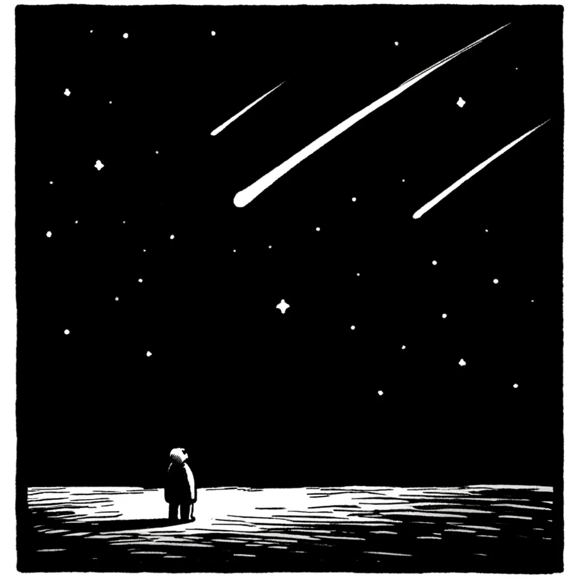
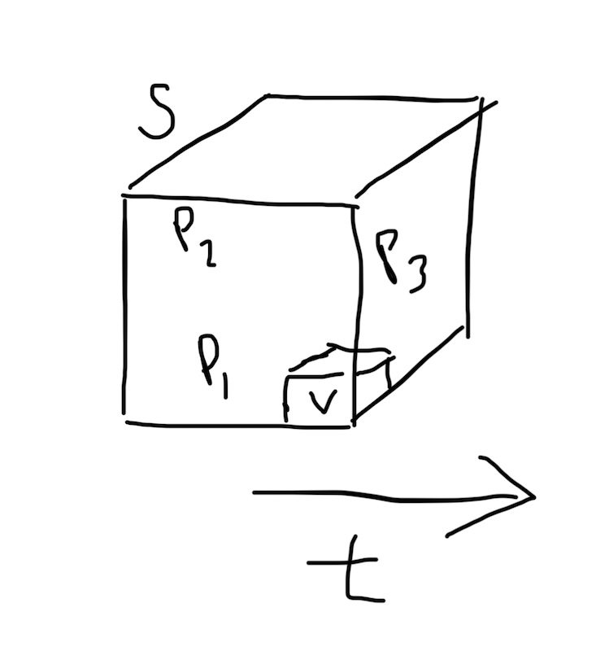

July 11, 2026 — I know the new thing I'm working on will be my work for the next 10 - 40 years.
I say this having worked on the Scroll stuff for 13 years.
I went into that completely naive. No idea of what I was stumbling into.
Of how hard it would be, how winding, how fun, how interesting.
It is through that work that I ended up in Seattle at Microsoft; to program synthesis and $; to Hawai'i and Kaia and Pemma.
Being a dad and feeling the responsibility for the world our kids live in led me to the new thing.
I tried to make a difference with Scroll, but it wasn't enough. The new thing is 4 dimensional, uses no screens, is not digital. As much as I love Scroll, from a pure math perspective the new thing is easily 100x bigger.
It's been 2 years since I realized the new work was the most important work for me to focus on.
Unlike with Scroll, I have gone into this carefully, deliberately, trying to ensure I use everything I have learned to do it right, with others, aligned with capital.
But just as with Scroll, I'm dong this with everything I have, a pure heart, deep whole body conviction, and I know that we will if nothing else, will this thing into existence.
If you know, you know.
Continue reading...A few words about juggling
When I was a kid I learned to juggle.
Barely.
I could handle 3 balls for about 30 seconds.
I bluster, that if I practiced, I could handle 5 and go for minutes.
This Reddit thread estimates a week of practice to juggle 3, a month to juggle 4, and a year to juggle 5.
Wikipedia has a whole page on Juggling world records. No one can continuously juggle more than 7 balls. The time record for 7 is 16 minutes. Someone juggled 6 for 30 minutes. The record for 5 is 3 hours and 44 minutes. For 3 it's 13 hours.
The takeaway is this: some humans can juggle more than others but even the greatest max out at 7.
Continue reading...
A language where all concepts are defined out of spheres with radii that accurately contain instances of the concept. In the simple prototype above, spheres are hyperlinked and clicking on one loads and zooms in on its contents.
I just got back from the future where they had the most incredible device.
Continue reading...I just watched a great presentation from Jon Barron (of NeRF fame).
Deep neural networks can now generate video nearly indistinguishable from "real" world video and/or video generated from 3D engines.
Does this provide evidence that the 3D/4D world doesn't actually exist?
Continue reading...This post is written in Scroll, a 2D language.
I have a new language, a 4D one, I've been working on for over a year now. I call it Ford (get it?).
I don't have much to share yet but I wanted to write about it anyway. Maybe someone is working on a similar thing and would like to collaborate.
Continue reading...I believe learning through motion-through conducting physical experiments in the real world-is vastly superior to learning through reading.
But the number of experiments one can do is vast, with some being far more informative than others, and time and resources are limited. Reading can point one to the motions-the experiments-that are most informative.
Thus, the most valuable symbols are the ones that guide one to conduct the most useful experiments.
Lately I've been figuring out how to put all of science into one file. I think the file would largely be experiment after experiment after experiment. Each one, the near minimum number of symbols to communicate the easiest experiment that can be done to cause learning the next most useful set of patterns about the world.
Continue reading...Pretext is all the words, all the definitions, all the patterns not in the text but that the text depends on. The texts that the author possesses and the reader requires.
Continue reading...What Science May Be
by Breck Yunits
We can embody all of science into a single fully connected text file.
Continue reading...Lately I've been thinking about topological sorting.
Topological sorting is sorting concepts in dependency order.
For example, if you wanted to sort "fire" and "internal combustion engine", fire would come first. To explain ICEs, you need fire, but to explain fire you don't need ICEs.
Continue reading...A scale is an ordering of numbers. Objects map to a scale to allow comparibility in that dimension.
The word scale is an overloaded term. Usually when I use the word "scale" I am using a different version of it, such as "scale it up" or "economies of scale". In this post I'm using it in the sense of a measurement or yardstick or number-line or type.
Continue reading...Can you think about trust mathematically? Yes.
This makes it easier to design things to be more trustworthy.
Continue reading...Can we quantify intelligence? Yes.
Program P is a bit vector that can make a bit vector (Predictions) that attempts to predict a bit vector of actual measurements (Nature).
Coverage(P) is the sum of the XNOR of the Predictions vector with the Nature vector.
Intelligence(P) is equal to Coverage(P) divided by Size(P).
Continue reading...High Impact Thoughts

Leibniz thought of Binary Notation; Lovelace of Computers; Darwin of Evolution; Marconi of the Wireless Telegraph; Einstein of Relativity; Watson & Crick of the Double Helix; Tim Berners-Lee of the Web; Linus of Git.
Even more importantly to you and to me, at some point our mothers and fathers thought to have us.
And since we were born, many people throughout our lives have had thoughts that had high positive impact on us.
If you believe we live in a Power Law World, then it follows that there is nothing with higher expected value; nothing with more leverage; nothing with higher ROI; nothing with higher impact; than High Impact Thoughts (HITs).
HITs dominate both our professional and personal lives. Let's take a closer look.
Continue reading...Datasets are automated tests for world models
by Breck Yunits
April 23, 2024 — I wrapped my fingers around the white ceramic mug in the cold air. I felt the warmth on my hands. The caramel colored surface released snakes of steam. I brought the cup to my lips and took a slow sip of the coffee bean flavored water inside.
Happiness is a hot cup of coffee in a ceramic mug on a cold day.
Continue reading...
S = side length of box. P = pattern. t = time. V = voxel side length.
March 30, 2024 — Given a box with side S, over a certain timespan t, with minimum voxel resolution V, how many unique concepts C are needed to describe all the patterns (repeated phenomena) P that occur in the box?
Continue reading...